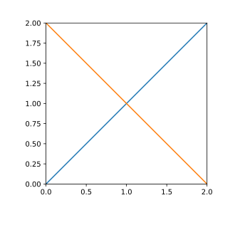

第11回：ファイル入出力
▶ プロット寸法の調整
PyPlotパッケージで描くグラフの寸法を調整する方法を紹介する。
描画範囲を指定するには、命令 plt[:figure](figsize=(x,y)) を用いる。 x と y は、横 x, 縦 y の寸法を、インチ単位で指定する。 1 inch = 25.4 mm である。
以下の例では、描画範囲を、横と縦をどちらも 80 mm に変更する。
using PyPlot
plt[:figure](figsize=(80./25.4, 80./25.4))
plot([0,1,2])
plot([2,1,0])軸の位置、あるいは、軸の周囲の余白(margin)の割合を指定するには、 関数 plt[:figure]() で得られる fig オブジェクトに対して、 命令 fig[:subplots_adjust]() を用いる。
横方向では、描画範囲の左端を 0、右端を 1 として、 left= で左軸の位置(割合)を、right=で、右軸の位置(割合)を指定する。
縦方向では、描画範囲の下端を 0、上端を 1 として、 bottom= で下軸の位置(割合)を、top=で、上軸の位置(割合)を指定する。
下の例では left=0.2, right=0.9, bottom=0.2, top=0.9 としたので、 左と下の軸を各々の端から 20 %、 右と上の軸を各々の端から 10 % に配置する。
using PyPlot
fig=plt[:figure]()
fig[:subplots_adjust](left=0.2, right=0.9, bottom=0.2, top=0.9)
ax=fig[:add_subplot](111)
ax[:plot]([0,1,2])
ax[:plot]([2,1,0])この二つを組み合わせると、左右または上下の軸の間隔を寸法で指定できる。
下の例では、左右および上下の軸の間隔を 40 mm とする。
using PyPlot
m_left=0.2; m_right=0.9; m_bottom=0.2; m_top=0.9
fx=40.0/(m_right-m_left)
fy=40.0/(m_top-m_bottom)
fig=plt[:figure](figsize=(fx/25.4, fy/25.4))
fig[:subplots_adjust](left=m_left, right=m_right, bottom=m_bottom, top=m_top)
ax=fig[:add_subplot](111)
ax[:plot]([0,1,2])
ax[:plot]([2,1,0])
ax[:set_xlim](0,2)
ax[:set_ylim](0,2)
▶ ファイル名・パス名・拡張子
Windows, MacOS, Linux など、多くのオペレーティング・システム (OS; Operating System) では、 フォルダ(folder)あるいはディレクトリ(directory)と呼ばれる階層構造の中に、ファイルは格納される。
ファイルが格納されたフォルダーは、「ファイルの属性」で調べることができる。
Windows10 のデスクトップ・アプリケーション「ペイント」で適当な絵を描いて、PNG形式で image1.png という名前でデスクトップに保存しよう。
ファイル image1.png をデスクトップ上で選んで右クリック、「プロパティ」メニューを選ぶと、そのファイルの属性（プロパティ）が表示される。
「場所」という属性に、このファイルが格納されたフォルダが表示される。 Windows 10では c:¥Users¥hs¥Desktop というフォルダ名は、ユーザ名 hs のデスクトップである。 このファイルの完全な名前 (絶対パス absolute path; あるいはフルパス full path)は c:¥Users¥hs¥Desktop¥image1.png である。
このファイルの名前は、.png で終わっている。この部分は、ファイルの種類を示しており、拡張子と呼ばれる。

デスクトップやエクスプローラでは、いくつかの拡張子が表示されない設定になっている場合がある。 拡張子を表示するには、次のようにする。
「コントローラ・パネル」から「エクスプローラ・オプション」を開く
「表示」タブを選択
「登録されている拡張子は表示しない」のチェックを外す
下の「OK」ボタンを押すと、この設定が適用される
▶ 画像ファイルの保存
関数 savefig(fn) は、PyPlotパッケージで描いたグラフをファイル名 fn として保存する命令である。
以下では、ch11-image1.png という名前でファイルが作成・保存する。 拡張子 .png の指定で、 PNG画像ファイルが作成される。
同じ名前のファイル名が存在しても警告されず、上書きされる。
using PyPlot
plt[:figure](figsize=(80./25.4, 80./25.4))
plot([0,1,2])
plot([2,1,0])
savefig("ch11-image1.png")「相対パスと絶対パス」
フォルダあるいはディレクトリの区切りに使われる文字は OS毎に異なるが、 Julia言語では、OSに依らずスラッシュ文字 / で区切ることになっている。
上の例のように、フォルダを指定せずに、ファイル名のみ指定する場合を相対パス (relative path )による指定という。
相対パスでは、現在の作業フォルダ（working folder、あるいは、カレント・フォルダ, current folder)の下に、ファイルが保存される。
現在の作業フォルダは、関数 Base.pwd() で得られる。(print working directory)
Base.pwd() # 各自異なる場合があるカレント・フォルダを変更するには、関数 Base.cd() を用いる。(change working directory)
ユーザ名 hs のデスクトップは、Windows 10 や MacOS のどちらでも /Users/hs/Desktop というフォルダ名であるので、 ユーザ名 hsのユーザが、作業フォルダーをデスクトップに変更するには、
Base.cd("/Users/hs/Desktop") # 各自の環境に応じて書き換えることとする。
これに対して、savefig( "/Users/hs/Desktop/ch11-image1.png" ) のように、 絶対パス (absolute path)でファイル名を指定してもよい。
「保守的なファイル名の選択」
ファイル名やフォルダー名（ディレクトリ名）に用いられる文字の種類は、 OS やネットワーク・システムにより異なる。 ファイル名の「文字化け」を避けるために、ファイル名は、以下のように選んでおくことを勧める。
ファイル名は、半角の英数字およびマイナス記号
-のみで構成する。拡張子の前に半角のピリオド
.を用いてもよい半角の英大文字と英小文字は区別されないとする
▶ 画像ファイルの種類
画像ファイルの形式は、大きく分けてビットマップ画像とベクトル(またはベクタ)画像に大別できる。
ビットマップ画像は、画素 (pixel) の集合として画像を格納するファイル形式である。
JPEGファイル (拡張子 JPG) は、写真画像によく用いられる。圧縮率は高いが、元の画像を復元しない場合がある。
GIFファイル。256色までの画像を表現できる。複数の画像を格納でき、アニメーションを表示できる。
PNGファイル。より多数の色を表現できる。元の画像に劣化がなく復元できる。
ベクトル画像は、直線や円などの図形の組合せとして画像を格納するファイル形式である。
EPS (Encapsulated PostScript)
PDF (Portable Document Format)
SVG (Scalable Vector Graphics)
WMF (Windows Metafile)
▶ 画像ファイルの保存オプション
関数 savefig(fn) には、いくつかのキーワード引数がある。
format="...": 画像ファイル形式を指定する (ファイル拡張子よりも、こちらの引数が優先される)dpi=数字: 画像の解像度を、数字で指定するtransparent=true: 白背景を透明にする
using PyPlot
plt[:figure](figsize=(80./25.4, 80./25.4))
plot([0,1,2])
plot([2,1,0])
savefig("ch11-image2.png", format="png", dpi=300, transparent=true)dpi (dots per inch) は、画像の解像度であり、1インチ内の画素数を示す。
粗い Webページの画像は 100 dpi 程度である。
軽中品位の印刷物の画像は 150 dpi 程度である。
オフィス向けプリンタの解像度は 300 から 600 dpi程度である。
高品位な出版物では、最低 600 dpiを求められる。
▶ テキストファイルの作成・書き込み
この節では、テキストファイルを作成し、テキストを書き込む方法を説明する。 一般のテキストファイルの拡張子は、txt である。
テキストファイルを作成するには、関数 open と close を組で用いる。
関数 open( fn, "w") は、ファイル名 fn のファイルを作成し、 テキストを書き込む準備を行う。ファイル fn は、既に存在していてもよい。その場合は、既に書き込まれた内容は廃棄される。ファイルが作成できない場合には例外が発生する。
関数 open は、ファイル記述子 f を返す。 関数 print(f, s) は、ファイル記述子 f で指定されたファイルに文字列 s を書き込む。 関数 println(f, s) は、ファイル記述子 f で指定されたファイルに文字列 s を書き込んだ後に開業する。
書き込みが終わったら、関数 close(f) を呼び出し、書き込みを終了する。
f = open( "hello1.txt", "w")
print(f,"Hello")
println(f," again.")
close(f)上のプログラムを実行したら、Windows10のエクスプローラを用いて、 ファイル hello1.txtが作成されたことを確かめよ。 更に、「メモ帳」アプリを起動し、テキストが正しく書き込まれていることを確認せよ。 (※ MacOSの場合は、「ファインダー」アプリと、「テキスト・エディット」アプリに読み替えよ)
上と同じ処理は、do...end 構文を用いて書くこともできる。endが終わると関数 close(f) が暗黙的に呼ばれる。
open( "hello1.txt", "w") do f
print(f,"Hello")
println(f," again.")
end▶ 書式付き出力
関数 @print(fmt, x) は、x を 書式 fmt に従って印字する。 書式文字列 fmt は、C言語の printf関数で用いられる書式と、ほぼ同じである。
なお、Jupyter notebookでは、結果が右寄せされて表示されない場合がある。
書式文字列 %i は、整数を印字する。
iの前に整数(フィールドサイズ)を付けると、その整数の幅で右寄せされて印字される。指定されたフィールドサイズで収まらない場合には、幅を増やして印字される。フィールドサイズを
0で始めると、空白が0で埋められる。フィールドサイズの前に
+を付けると、非負の数の前に+符号がつく。
julia> @printf( "%5i\n", -41 )
-41
julia> @printf( "%05i\n", 413 )
00413
julia> @printf( "%+5i\n", -413 )
-413
julia> @printf( "%+05i\n", -413 )
-0413
julia> @printf( "%+5i\n", -41131 )
-41131書式文字列 %f は、小数を印字する。
fの前に整数(フィールドサイズ)を付けると、その整数の幅で右寄せされて印字される。指定されたフィールドサイズで収まらない場合には、幅を増やして印字される。フォールドサイズに続けて、ピリオド
.と整数を付けると、小数点以下の桁数を指定する。指定された小数点以下桁数で表されない場合には、丸められる。フィールドサイズを
0で始めると、頭の空白が0で埋められる。フィールドサイズの前に
+を付けると、非負の数の前に+符号がつく。InfとNaNは、その通り印字される。
julia> @printf( "%8.3f\n", -2e-2 )
-0.020
julia> @printf( "%08.0f\n", -0.252 )
-0000000
julia> @printf( "%8.1f\n", -0.252 )
-0.3
julia> @printf( "%08.2f\n", -0.252 )
-0000.25
julia> @printf( "%8.3f\n", -0.252 )
-0.252書式文字列 %e は、指数形式で印字する。
eの前に整数(フィールドサイズ)を付けると、その整数の幅で右寄せされて印字される。フィールドサイズで収まらない場合には、幅を増やして印字される。フォールドサイズに続けて、ピリオド
.と整数を付けると、小数点以下の桁数を指定する。指定された小数点以下桁数で表されない場合には、丸められる。フィールドサイズを
0で始めると、頭の空白が0で埋められる。フィールドサイズの前に
+を付けると、非負の数の前に+符号がつく。InfとNaNは、その通り印字される。
julia> @printf( "%11.5e\n", -0.0078125 )
-7.81250e-03
julia> @printf( "%12.4e\n", -0.0078125 )
-7.8125e-03
julia> @printf( "%13.3e\n", -0.0078125 )
-7.813e-03
julia> @printf( "%13.2e\n", -0.0078125 )
-7.81e-03
julia> @printf( "%13.1e\n", -0.0078125 )
-7.8e-03書式文字列 %s は、指数形式で印字する。
sの前に整数(フィールドサイズ)を付けると、その整数の幅で右寄せされて印字される。フィールドサイズで収まらない場合には、幅を増やして印字される。
julia> @printf("%8s\n", "Hello")
Hello
julia> @printf("%8s\n", "Hello world")
Hello world書式は復数使用してもよい。書式があるのに、印字すべき値がないと例外が発生する。
書式を指定しない文字は、そのまま印字される。
\nは改行文字を表す。\tはタブ(TAB)文字を表す。
julia> @printf( "%.1f %15.7e\n", 0.025,-0.0078125 )
0.0 -7.8125000e-03
julia> @printf( "x=%.1f y=%15.7e\n", 0.025,-0.0078125 )
x=0.0 y= -7.8125000e-03
julia> # 引数が足りない例
@printf( "%.1f %15.7e\n", 0.025 )
ERROR: ArgumentError: @printf: wrong number of arguments (1) should be (2)▶ 書式を指定して、テキストファイルに書き込む。
正規乱数 10 個からなるCSVファイルを書き出そう。 関数 @printf の第一引数に、ファイル記述子 f を入れると、f で示されたファイルに印字される。
open( "test1.txt", "w") do f
for i in 1:10
@printf(f, "%15.7f\n", randn())
end
end上のプログラムを実行したら、「メモ帳」アプリを起動し、数字が指定された書式で正しく書き込まれたことを確認せよ。 更に、「Excel」アプリを起動し、このファイルを1列のデータとして読み込んでみよ。
▶ CSVファイルへの書き込み
カンマ , で区切られた値が並ぶ行から構成されるテキストファイルを CSV (Comma Separated Value) ファイルという。 表計算ソフトウエアとのデータの輸入輸出によく用いられる。 拡張子は csv である。
関数 @printf を用いて、整数と浮動小数点数をカンマで区切った行を書き出そう。
なお、CSVファイルの1行目に、カンマ , で区切られた文字列を、各列の表題として書くことが多い。
open( "test2.csv", "w") do f
println(f, "i,x")
for i in 1:10
@printf(f, "%i,%15.7f\n", i, randn())
end
end上のプログラムを実行したら、「メモ帳」アプリを起動し、CSVファイルが正しく書き込まれていることを確認せよ。 更に、「Excel」アプリを起動し、2列のデータとして読み込んでみよ。
▶ テキストファイルからの行単位の読み込み
関数 open( fn ) は、ファイル名 fn のファイルをテキストとして、読み込む準備を行う。 ファイル fn が読み込めない場合には例外が発生する。
テキストファイルを読み込むためにも、関数 open と close を組で用いる。
以下のプログラムは、テキストファイルから、１行ずつ読み込み、それを印字する。
関数 readline(f) は、ファイル記述子 f からテキストを読み込み、行に分割する。このとき、行末の改行文字は取り除かれる。
f=open("hello1.txt")
for line in eachline(f)
print(line)
end
close(f)Hello again.書き込みの場合と同様、do...end 構文を用いて書くこともできる。endが終わると関数 close(f) が暗黙的に呼ばれる。
open( "hello1.txt" ) do f
for line in eachline(f)
print(line)
end
endHello again.▶ 文字列から数に変換する
文字列を数に変換するには、関数 parse(t, s)を用いる。 第一引数には変換先の型を、第二引数には、変換したい文字列を書く。文字列の前後の空白は無視される。
julia> parse(Float64, " 12.3")
12.3
julia> parse(Float64, " 12.3e-2 ")
0.123
julia> parse(Int64, " 123 ")
123
julia> # 変換できない例
parse(Int64, " 12.3 ")
ERROR: ArgumentError: invalid base 10 digit '.' in " 12.3 "上のプログラムで作成したファイル test1.txt から 1行ずつ読み込み、浮動小数点数に変換して印字してみよう。
open( "test1.txt" ) do f
for line in eachline(f)
x=parse(Float64, line)
@printf("%15.7f\n", x)
end
end -1.6556277
-1.2461509
0.0423941
1.1453175
0.5571122
-1.7117875
0.1603546
0.3434417
0.5860538
-1.4127847▶ 文字列を分割する
関数 split(s, c) は、文字列を分割する。 第一引数の文字列 s を、第二引数の文字列のどれか一つの文字が出現したら分割する。結果として、文字列を要素とする配列が返される。
英文テキストを、空白で区切る。
julia> split("one cup of brown suger", " ")
5-element Array{SubString{String},1}:
"one"
"cup"
"of"
"brown"
"suger"行をカンマで区切って、それぞれ整数と浮動小数点数に変換する。
julia> line=" 15 , 0.2401863"
" 15 , 0.2401863"
julia> s=split( line, "," )
2-element Array{SubString{String},1}:
" 15 "
" 0.2401863"
julia> parse( Int64, s[1])
15
julia> parse( Float64, s[2])
0.2401863上のプログラムで作成した test2.csv を読み込み、各行を整数と浮動小数点数に変換し、印字する。 ただし、1行目は読み飛ばす。
open( "test2.csv" ) do f
i=0
for line in eachline(f)
i += 1
i == 1 && continue
s=split(line, ",")
x=parse(Int64, s[1])
y=parse(Float64, s[2])
@printf("%5i %15.7f\n", x, y)
end
end 1 0.9098958
2 0.1291371
3 -0.0780766
4 0.0068740
5 -1.1455877
6 -0.7682404
7 1.6183598
8 1.3556816
9 -0.0688818
10 1.3437264▶ 配列に要素を加える
関数 push!(a,e) は、配列 a に、値 x を付け加える。配列 a は書き換えられる。
julia> # Int64 を要素とする配列
xs=[1,2]
2-element Array{Int64,1}:
1
2
julia> push!(xs, 3)
3-element Array{Int64,1}:
1
2
3
julia> xs
3-element Array{Int64,1}:
1
2
3
julia> push!(xs, 4)
4-element Array{Int64,1}:
1
2
3
4
julia> xs
4-element Array{Int64,1}:
1
2
3
4要素がない配列を作るには 関数 zeros(t, 0) を使えばよい。 第一引数 t は、作成する配列の要素である。
以下では、Float64型の配列 (要素数 0)を最初に作成した。
julia> xs=zeros(Float64,0)
0-element Array{Float64,1}
julia> push!(xs, 1.0)
1-element Array{Float64,1}:
1.0
julia> xs
1-element Array{Float64,1}:
1.0
julia> push!(xs, 2.0)
2-element Array{Float64,1}:
1.0
2.0
julia> xs
2-element Array{Float64,1}:
1.0
2.0CSVファイルから配列を作る
以上を組合せて、CSVファイルを読み込み、値を配列としてまとめることができる。
xs=zeros(Int64,0)
ys=zeros(Float64,0)
open( "test2.csv" ) do f
i=0
for line in eachline(f)
i += 1
i == 1 && continue
s=split(line, ",")
x=parse(Int64, s[1])
push!(xs, x)
y=parse(Float64, s[2])
push!(ys, y)
end
end
@show xs
@show ysxs = [1, 2, 3, 4, 5, 6, 7, 8, 9, 10]
ys = [0.909896, 0.129137, -0.0780766, 0.006874, -1.14559, -0.76824, 1.61836, 1.35568, -0.0688818, 1.34373]
10-element Array{Float64,1}:
0.909896
0.129137
-0.0780766
0.006874
-1.14559
-0.76824
1.61836
1.35568
-0.0688818
1.34373続けて、データをプロットすると、
using PyPlot
plot(ys, ".")▶ CSVパッケージ
CSVパッケージを用いると、CSVファイルを容易に扱うことができる。
CSVパッケージを導入していない場合は導入する。
Pkg.update()
Pkg.add("CSV")CSVパッケージに定義されている関数 CSV.read(fn) を用いると、CSVファイル fn を読み込むことができる。 結果として、拡張された配列 (DataFrame型)が返される。
# CSV
using CSV
df=CSV.read("test2.csv")
# 1番目のデータ配列
@show df[1]
# 2番目のデータ配列
@show df[2]
#
using PyPlot
plot( df[2], ".")df[1] = Union{Int64, Missings.Missing}[1, 2, 3, 4, 5, 6, 7, 8, 9, 10]
df[2] = Union{Float64, Missings.Missing}[0.909896, 0.129137, -0.0780766, 0.006874, -1.14559, -0.76824, 1.61836, 1.35568, -0.0688818, 1.34373]
1-element Array{PyCall.PyObject,1}:
PyObject <matplotlib.lines.Line2D object at 0x1300842e8>データをプロットした結果は、上と同じである。
★ 今回のまとめ
PyPlotパッケージで描いた画像
画像寸法の調整
画像のファイルへの保存
文字列の扱い
書式付き出力
文字列の分割
文字列から数への変換
配列に要素を加える
テキストファイル
書き込み
読み込み
CSVファイル